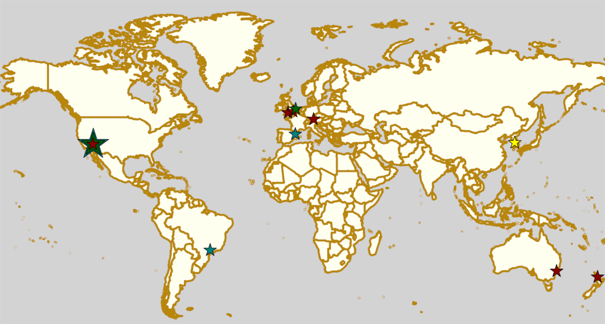

Weekend Highlights: 20 July 2019
This weekend (and the week leading to it) is pretty dominated by the world's largest annual Roller Derby event, Rollercon. With people travelling across the world to attend, the schedule elsewhere is a little sparse, but there are still exciting things happening.
We've also included a bonus section in this week's roundup highlighting sessions at Rollercon itself which we think are either interesting, or important, or both.
The rules are, as usual: highlights limited to 1 event per country, with an "extra" event allowed for a different kind of fixture (so, 1 tournament and 1 bootcamp), or if they involve Scottish leagues (since we are the Scottish Roller Derby Blog). Other notability might also allow the extra event - great posters, notable teams, etc. (League birthdays may count as "special" enough, at our discretion ;) )
In a bid to make this list as useful as possible, we've avoided links to Facebook except where noted. (Links to Teams are to non-Facebook resources - Instagram, or actual team pages - we'd strongly recommend that Teams get themselves an actual webpage [we can help host one if you need help]).
Locations are roughly organised East-West (with things before the weekend out sequence at the start).
Sat: Auckland, New Zealand
Auckland Roller Derby League host the second of Team Crazylegs Aotearoa's bouts in the past month. Crazylegs Aotearoa is the local branch of the international series of exhibition teams for skaters with invisible illnesses, and this bout raises funds for the support charity Lifeline.
- Auckland Roller Derby League versus Team Crazylegs Aotearoa
Event starts: 1700 Saturday (doors open)
Venue: ActivZone Indoor Sports Arena, Downing Street, Auckland, New Zealand
Sat: Sydney, NSW, Australia
Inner West Roller Derby League host the 5th round of this season's 5x5 Roller Derby tournament.
- Port Macquarie + Central West (Bathurst, Orange area) versus Maitland Roller Derby
- Central Coast Roller Derby United + SouthSide Derby Dames versus Western Sydney Rollers
- Newcastle Roller Derby League versus Inner West Roller Derby League
Event starts: 1330 Saturday (doors open)
Venue: Sydney Boys High School, Sydney, NSW, Australia
Mixed-team bouts not in FTS as they can't be rated.
Sat: Camp Humphreys, South Korea
OH! Roller Derby (link to Facebook), Korea's only roller derby league (based at the USAG Humphreys base) host a "Patriots Scrimmage". This event will be livestreamed (probably on Facebook Live).
- Founding Fighters versus Star Spangled Bruisers
Event starts: 1200 Saturday
Venue: Camp Humphreys, Pyeongtaek, South Korea
Sat: Münich, Germany
[FACEBOOK LINK] [FTS LINK (Bundesliga D1)] [FTS LINK]
Munich Rolling Rebels host an A/B teams double header of central European derby, including a headlining Bundesliga Division 1 game against Ruhrpott!
- Munich Dynamite (Münich A) versus RuhrPott Roller Girls (Essen)
- Municorns (Münich B) versus Fearless Bruisers (Innsbruck).
Event starts: 1500 Saturday (doors open)
Venue: Städtische Sporthalle Allach, Eversbuschstr. 124, Munich, Germany
Sat: Norwich, UK
Norfolk Roller Derby host "Stone Walls", an Open-To-All genders Roller Derby Sevens tournament, in support of Norwich Pride (to which all profits also go).
Event starts: 1100 Saturday (doors open)
Venue: Sewell Park Academy, Norwich, Norfolk, UK
Sat: London, UK
[FACEBOOK LINK] [FTS LINK 1] [FTS LINK 2]
London Rockin Rollers host a double-header of derby for their A and B teams.
- Badasses (London Rockin' Rollers B) versus Bomb Squad (Birmingham Blitz Dames B)
- All-Stars (London Rockin' Rollers A) versus Dublin Roller Derby B
Event starts: 1415 Saturday
Venue: Tottenham Green Pools & Fitness, 1 Philip Lane, London, UK
Sun: Taunton, UK
[FACEBOOK LINK] [FTS LINK 1] [FTS LINK 2]
SWAT Roller Derby host the second fixtures in the South West Season, the English south-wests' tournament series. This fixture also includes a MRDA-gender game to kick things off.
- Kings of Block 'n' Roll ("south west" M) versus Bristol Men's (Bristol M)
- Cornwall Roller Derby versus North Devon B
- SWAT Roller Derby B (Exeter/Taunton B) versus Roman Rollers (Bath B)
Men's game not in FTS due to unrankability of Kings
Event starts: 1115 Sunday
Venue: Wellsprings Leisure Centre, Cheddon Rd, Taunton, Somerset
Sat: Reus, Spain
Insubmises Roller Derby host a party, and promotion of Roller Derby, to end the season.
- Drinks and discussion of Roller Derby
- Showing of the Insubmises first bout on big screen.
- Live music and bar 'til late.
Event starts: 1930 Saturday
Venue: Bar Campus, Carrer St, Lorrenç 11, Reus, Spain
Sat: Piracicaba, Brazil
Capivaras Roller Derby host a fundraising party event, with food and drinks (including what might be mulled wine?), plus a trampoline for kids. This event ends the Brasilian season, and raises money for the sport.
Event starts: 1700 Saturday
Venue: Clube Delphi, Piracicaba, Brazil
Sat: Mar del Plata, Argentina
Rebeldes del Asfalto have a stall at the "Femme Fatale: Festival of Art", selling merch, promoting roller derby and providing a buffet as well! This is the first edition of the "Femme Fatale" art festival, intended to promote female-centered art, with live music, tattoos, and art exhibitions.
Event starts: 2000 Saturday
Venue: Liber Art, Moreno 2742, Mar del Plata, Argentina
Sat: Mexico City, Mexico
Fugaz Roller Derby host a fundraising Punk Rock & Pizza event, woth an array of Mexican Punk, Death metal and Grindcore bands playing live music. This event raises funds for Fugaz' attendance at the 2019 Mexican D1 playoffs in Chihuahua (about which later in the week).
Event starts: 1500 Saturday
Venue: TONY EL GORDO, Mixtecas 499, Mexico City, Mexico
Sat: San Luis, Mexico
Furiosas Roller Derby host the Nymerias for a bout, as the Mexican Champs approaches.
Event starts: 1100 Saturday
Venue: INPODE, Avenida Himno Nal 4000, San Luis, Mexico
Special edition addition: ROLLERCON
Everyone is probably very aware that this week is Rollercon 2019, in Las Vegas, NV. We're going to do a quick highlight of some of the more interesting things scheduled for the 2019 edition. Obviously there's too much to even summarise here, so we've tried to pick a few topics we think need highlighting, aside from usual challenge games etc.
Short Track Roller Derby
Rolla Skate Club's Short Track Roller Derby ruleset returns to Rollercon (having made its world-debut there in 2018).
- 1650 Friday, Training Track 4 (MVP tickets): A-C level Short Track intro and training w/ Booty Quake & Luludemon.
- 2000 Friday, Competition Track 4: Short Track Open Scrimmage
- 1800 Saturday, Training Track 3 (MVP tickets): A-C level Short Track intro and training w/ Booty Quake & Luludemon
- 2045 Saturday, Competition Track 3: WFTDA-D1-level Short Track exhibition game ("Short Skirts" versus "Short Sleeves")
Queer Skate Alliance
Queer Skate Alliance has been doing sterling work since their formation less than a year ago. If there's an important challenge game at this Rollercon, their exhibition showcase is it.
- 2000 Friday, Challenge Track 1
Rollercon Nations Tournament
A fixture of Rollercons for the last few years has been the mini-Nations tournament, pitting a growing number of RDWC-National teams against each other.
This year we have: Team Indigenous, Team Korea, Team Canada, Team Philippines, Jewish Roller Derby and a Japan team competing for the championship.
- 0930-1615 Friday, Competition Track 3: "Playoffs series"
- 1500 Saturday, Competition Track 1: Nations Championship bout
Derby without Borders
The fantastic Derby without Borders project is at Rollercon, with a seminar session aimed at growing the project's support further. Since 2017, they've come a huge way (see our interview with founder, Mae Dae, here), and they can go even further, with more support.
- 1300 Thursday, Seminar Room 3
- 1630 Saturday, Seminar Room 5
WFTDA Roller Derby World Summit and Officiating Clinic
WFTDA are taking advantage of the nexus of derby that is Rollercon to host an associated World Summit event here. Some of the seminar sessions are particularly relevant for the future of the sport, and we'd encourage people to attend.
There's a lot of events in the summit, so we're just highlighting the most "interesting" one of the set to us.
- Wednesday through Sunday: WFTDA Officiating Clinic .
- important sessions (as well as the usual rules and positions) on: Avoiding Burnout, Career Pathing and Footage Review.
- 10 "Feedback games" and 4 "Observation games" for development.
- 1100 Saturday, Seminar Room 3: "WFTDA Gender Policy and Open Division Feedback", especially interesting to see a new direction WFTDA is building in.
Seminar Selection
Finally, here's one or two seminars we think have useful and relevant topics for Roller Derby right now in 2019:
- 1500 Wednesday, Seminar Room 7: "Announcing: No, You Can't Say That" (Merry Khaos, AFTDA President)
- 1715 Thursday & 1830 Friday, Seminar Room 3: "Kick Your League's Toxic Culture in the Ass!" (Rita Giddens, Fort Myers Roller Derby)
- 1230 Friday, Lower Boardroom: "To Wear Many Hats" (Merry Khaos)
- 1500 Friday, LVCC North entrance: "Photographing Skaters masterclass" (Lenny Gilmore)